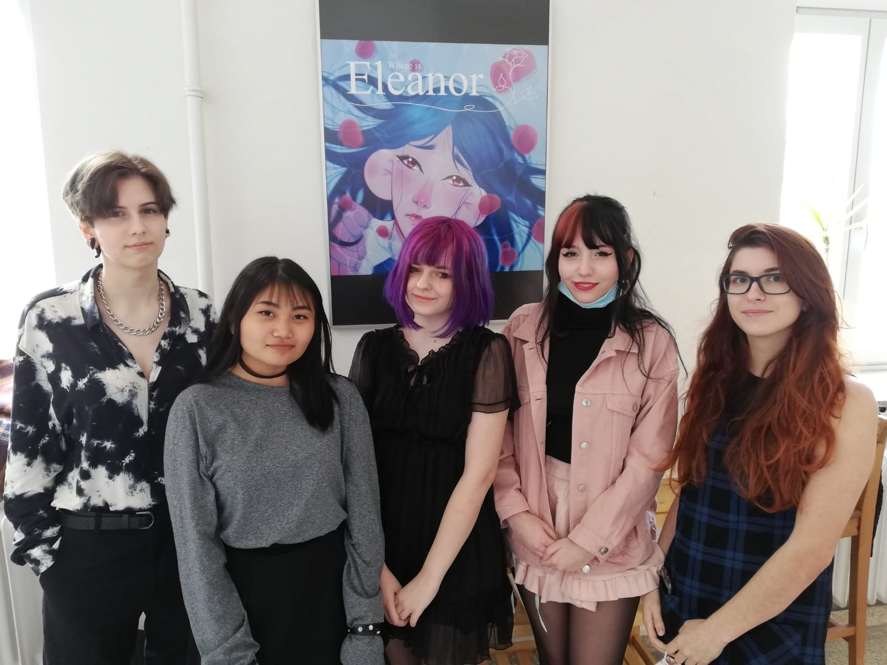

Ever since they met, Eleanor Rose and Georgia Daisy have been inseparable. Now Eleanor is gone and Georgia feels lost without her best friend, willing to do just about anything to get her back.
Scroll down to see more!Ever since they met, Eleanor Rose and Georgia Daisy have been inseparable but now Eleanor is gone and Georgia feels lost without her best friend, willing to do just about anything to get her back. Take a deep dive into Georgia's mind. Explore the school, talk to strange creatures, defeat enemies and regain Georgia's memories.
Play "Where Is Eleanor Rose?"- a combination of 2D adventure game and visual novel - and discover the truth about Eleanor's disappearance.
2D adventure game with visual novel elements
PC only
Pegi 6
E for Everyone
Eleanor is 15 years old and a Junior. She is loud and very confident, so she often comes off as arrogant, but she's very friendly and outgoing by nature.

Georgia is 15 years old and a Junior. She spends pretty much all of her time with her best friend Eleanor since she's very introverted and has difficulties making new friends.

We are Team KDG, a 5-student-team of the vocational school Spengergasse consisting of three game developers and two animators. This is our first game "Where is Eleanor Rose?", which we developed for the past year as our diploma project.
Follow our developer accounts on Instagram!
Programmer, Game- & Level-Designer
Environment, UI- & Level-Designer
Storywriter & Artist
Animator & Character-Designer
Sound-Designer